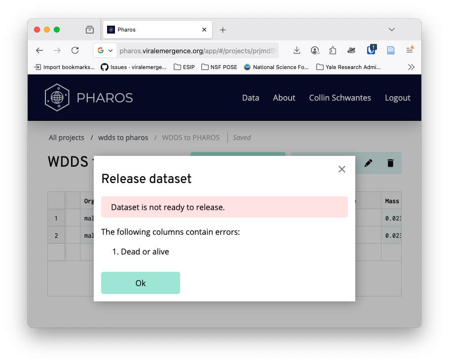

The Wildlife Disease Data Standard (WDDS) was originally conceived as being the data standard for Pharos - a data aggregation platform for wildlife disease data. However, the standard has evolved faster than the platform and as of September 2025, the two are out of sync.
This vignette will focus on converting disease data from the WDDS standard to be compatible with Pharos. As September 2025, Pharos does not have an API that is programatically accessible for users. To upload disease data, users must log in or sign up, create a project, and either manually enter the data or use the CSV upload function to bulk upload data.
See the vignette("disease_data") for more information on
validation.
library(wddsWizard)
library(dplyr)
#>
#> Attaching package: 'dplyr'
#> The following objects are masked from 'package:stats':
#>
#> filter, lag
#> The following objects are masked from 'package:base':
#>
#> intersect, setdiff, setequal, union
library(readxl)
library(janitor)
#>
#> Attaching package: 'janitor'
#> The following objects are masked from 'package:stats':
#>
#> chisq.test, fisher.test
library(jsonlite)
library(taxize)Read in and Clean up the excel spreadsheet
## read
becker_data <- wdds_example_data(version = "latest", file = "becker_demo_dataset.csv") |>
readr::read_csv()
#> Rows: 2 Columns: 22
#> ── Column specification ────────────────────────────────────────────────────────
#> Delimiter: ","
#> chr (15): Sample ID, Animal ID, Sample collection method, Sample collection ...
#> dbl (6): Latitude, Longitude, Collection day, Collection month, Collection ...
#> lgl (1): Live capture
#>
#> ℹ Use `spec()` to retrieve the full column specification for this data.
#> ℹ Specify the column types or set `show_col_types = FALSE` to quiet this message.
becker_data_prelim <- janitor::clean_names(becker_data, case = "lower_camel")
### Check for required Fields
# check that required fields are in dataset
required_field_check <- wddsWizard::disease_data_required_fields %in% names(becker_data_prelim)
wddsWizard::disease_data_required_fields[!required_field_check]
#> [1] "sampleID"
### Rename Fields to match standard
# see all field names in the disease data schema
# wddsWizard::disease_data_schema$properties |> names()
becker_data_clean <- becker_data_prelim |>
dplyr::rename(
"sampleID" = "sampleId",
"animalID" = "animalId"
)Differences in required fields
Unlike WDDS, the Pharos data standard requires
Collection month, Collection day, and
Collection year to be present and not blank for all records
in a dataset. See the Pharos
data dictionary for more details.
Converting WDDS Data to Pharos Data
The WDDS to Pharos conversion happens by cross walking the two data standards.
| wdds | pharos |
|---|---|
| age | Age |
| ageUnits | NA |
| animalID | Animal ID |
| collectionDay | Collection day |
| collectionMonth | Collection month |
| collectionYear | Collection year |
| detectionMeasurement | Detection measurement |
| detectionMeasurementUnits | Detection measurement units |
| detectionMethod | Detection method |
| detectionOutcome | Detection outcome |
| detectionTarget | Detection target |
| forwardPrimerSequence | NA |
| genbankAccession | GenBank accession |
| geneTarget | NA |
| hostIdentification | Host species |
| hostLifeStage | Life stage |
| latitude | Latitude |
| length | Length |
| lengthMeasurement | NA |
| lengthUnits | NA |
| liveCapture | Dead or alive |
| longitude | Longitude |
| mass | Mass |
| massUnits | NA |
| organismQuantity | NA |
| organismQuantityUnits | NA |
| organismSex | Organism sex |
| parasiteID | NA |
| parasiteIdentification | Pathogen |
| parasiteLifeStage | NA |
| primerCitation | Primer citation |
| probeCitation | NA |
| probeTarget | NA |
| probeType | NA |
| reversePrimerSequence | Primer sequence |
| sampleCollectionBodyPart | NA |
| sampleCollectionMethod | Collection method or tissue |
| sampleID | Sample ID |
| sampleMaterial | NA |
| spatialUncertainty | Spatial uncertainty |
| NA | Detection comments |
| NA | Host species NCBI tax ID |
| NA | Detection target NCBI tax ID |
| NA | Health notes |
| NA | Pathogen NCBI tax ID |
Convert the data
Be extremely careful when using this function.
While most of the aligned fields are a 1:1 match, the following fields are not:
wdds_to_pharos_map |>
dplyr::filter(wdds %in% c("forwardPrimerSequence", "liveCapture","reversePrimerSequence", "sampleCollectionMethod" ) | is.na(pharos)) |>
kableExtra::kable() |>
kableExtra::kable_styling()| wdds | pharos |
|---|---|
| ageUnits | NA |
| forwardPrimerSequence | NA |
| geneTarget | NA |
| lengthMeasurement | NA |
| lengthUnits | NA |
| liveCapture | Dead or alive |
| massUnits | NA |
| organismQuantity | NA |
| organismQuantityUnits | NA |
| parasiteID | NA |
| parasiteLifeStage | NA |
| probeCitation | NA |
| probeTarget | NA |
| probeType | NA |
| reversePrimerSequence | Primer sequence |
| sampleCollectionBodyPart | NA |
| sampleCollectionMethod | Collection method or tissue |
| sampleMaterial | NA |
The wdds_to_pharos function takes some shortcuts to make
reconciling the fields easier. In general, WDDS is more granular than
Pharos but none of the multiple component fields are condensed to a
single field - e.g. the primer sequence fields are NOT combined Primer
sequence and the sample collection fields are not condensed to
Collection method or tissue. Certain fields are technically different
types but can be harmonized. For instance liveCapture is
mapped directly to dead or alive even though they are
different types. Another major difference is that in Pharos, units for
certain measures are fixed and the author of the data is told what they
are when data are created, while in WDDS they are part of the disease
data.
becker_pharos <- wdds_to_pharos(wdds_disease_data = becker_data_clean)
#> `sampleCollectionMethod` does not map perfectly to `Collection method or tissue`. Please review those entries.
#> `liveCapture` does not map perfectly to `Dead or alive`. Please review those entries.
# readr::write_csv(becker_pharos,file = "wdds_to_pharos_example.csv")Upload data into Pharos
Uploading data to Pharos has to be done via the web portal. As Pharos is still in beta testing, some features like password reset are clunky. We strongly recommend using a password manager like bitwarden to store your credentials.
Click on your username
Click New Project or select an existing project
Click create new dataset - below you can see the pre-determined units for different measures
Click add rows from CSV
After adding the the rows, the data will be validated against the PHAROS schema. Valid columns will be highlighted in a light green and invalid columns in a light red.
If you click publish, a validation report will be generated an any issues will be noted.
 ## Improve data for upload
# fix dead or alive
becker_pharos_da <- becker_pharos |>
dplyr::mutate(`Dead or alive` = dplyr::case_when(
FALSE ~ "dead",
TRUE ~ "alive"
))
## add in ncbi taxa ids because we like standardization :)
host_taxa <- taxize::get_uid(becker_pharos_da$`Host species`)
#> No ENTREZ API key provided
#> Get one via taxize::use_entrez()
#> See https://ncbiinsights.ncbi.nlm.nih.gov/2017/11/02/new-api-keys-for-the-e-utilities/
#> ══ 2 queries ═══════════════
#>
#> Retrieving data for taxon 'Desmodus rotundus'
#> ✔ Found: Desmodus+rotundus
#>
#> Retrieving data for taxon 'Desmodus rotundus'
#> ✔ Found: Desmodus+rotundus
#> ══ Results ═════════════════
#>
#> • Total: 2
#> • Found: 2
#> • Not Found: 0
becker_pharos_da$`Host species NCBI tax ID` <- host_taxa
detection_target_taxa <- taxize::get_uid(becker_pharos_da$`Detection target`)
#> No ENTREZ API key provided
#> Get one via taxize::use_entrez()
#> See https://ncbiinsights.ncbi.nlm.nih.gov/2017/11/02/new-api-keys-for-the-e-utilities/
#> ══ 2 queries ═══════════════
#>
#> Retrieving data for taxon 'Coronaviridae'
#> ✔ Found: Coronaviridae
#>
#> Retrieving data for taxon 'Coronaviridae'
#> ✔ Found: Coronaviridae
#> ══ Results ═════════════════
#>
#> • Total: 2
#> • Found: 2
#> • Not Found: 0
becker_pharos_da$`Detection target NCBI tax ID` <- detection_target_taxa
pathogen_taxa <- taxize::get_uid(becker_pharos_da$Pathogen)
#> No ENTREZ API key provided
#> Get one via taxize::use_entrez()
#> See https://ncbiinsights.ncbi.nlm.nih.gov/2017/11/02/new-api-keys-for-the-e-utilities/
#> ══ 2 queries ═══════════════
#>
#> Retrieving data for taxon 'Alphacoronavirus'
#> ✔ Found: Alphacoronavirus
#>
#> Retrieving data for taxon ''
#> Not found. Consider checking the spelling or alternate classification
#> ══ Results ═════════════════
#>
#> • Total: 2
#> • Found: 1
#> • Not Found: 0
becker_pharos_da$`Pathogen NCBI tax ID` <- pathogen_taxa
### write the csv
# readr::write_csv(becker_pharos_da,file = "wdds_to_pharos_example_corrected.csv")Pharos doesn’t like NA’s
Pharos says that instead of using NA for items without values, we should leave them blank.
# use the built in function na_to_blank
beck_pharos_drop_nas <- na_to_blank(becker_pharos_da)
# readr::write_csv(beck_pharos_drop_nas,file = "wdds_to_pharos_example_final_final.csv")
Get yourself a treat - you just created a dataset ready to be shared on Pharos!